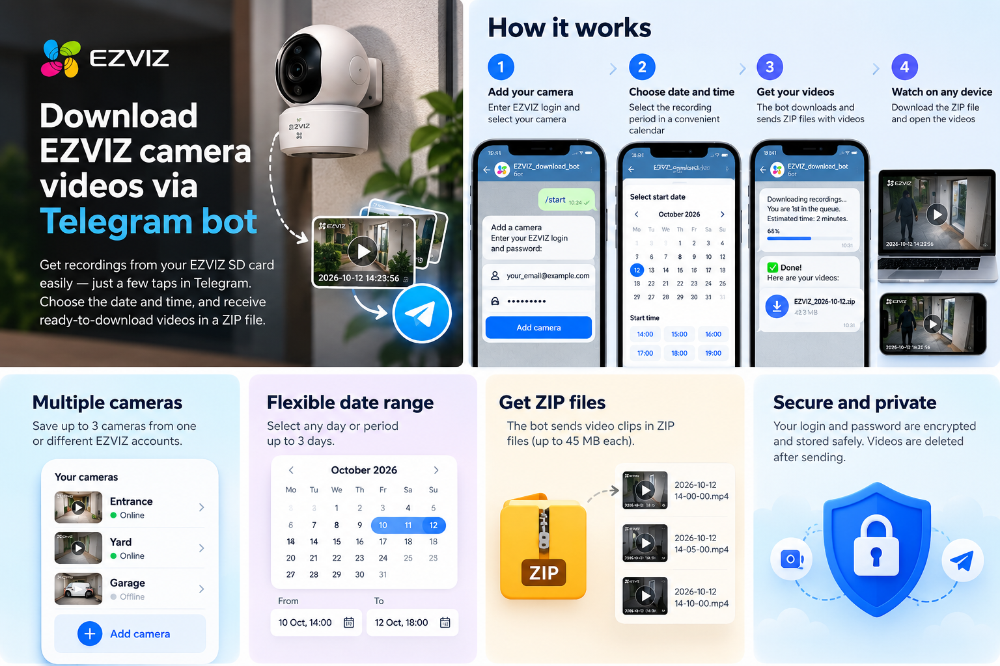

Add your camera
Open the bot, choose a language, enter your EZVIZ login and password. Select a detected camera and give it a useful name.
/start
up to 3 cameras in one bot
up to 3 cameras in one bot
Download EZVIZ camera videos from an SD card without screen recording. Pick a time range in the Telegram bot and get individual MP4 clips in ZIP files.
Works with SD card recordings available to your EZVIZ account. You will need your EZVIZ credentials to add a camera in the bot.
Three clear steps. Choose dates and times according to the camera clock.
Open the bot, choose a language, enter your EZVIZ login and password. Select a detected camera and give it a useful name.
Choose the start and end dates and times. A request can cover up to three days; the bot shows the range before downloading.
The bot sends individual MP4 recordings packed into ZIP files of up to 45 MB each. Save the files from Telegram to your phone or computer.
Use the calendar and exact time to find recordings. If there are no clips, the bot will tell you.
An illustration of the camera, chat, separate recordings and archive.

The bot looks for individual recordings on the selected camera's SD card that your EZVIZ account can access. Support depends on the camera model and archive availability.
Not in one request. For a longer period, make several consecutive requests of no more than three days each.
The bot stores your camera login and password encrypted on its server while the camera is saved. It deletes your password message after processing. Temporary videos are deleted after ZIP delivery is confirmed. You can remove a saved camera in the bot.
No. This is an independent Telegram bot with no affiliation to EZVIZ. See EZVIZ support for official download methods.
If one clip exceeds the 45 MB ZIP limit, the delivery may be incomplete. Try a shorter time range or use the official EZVIZ app.